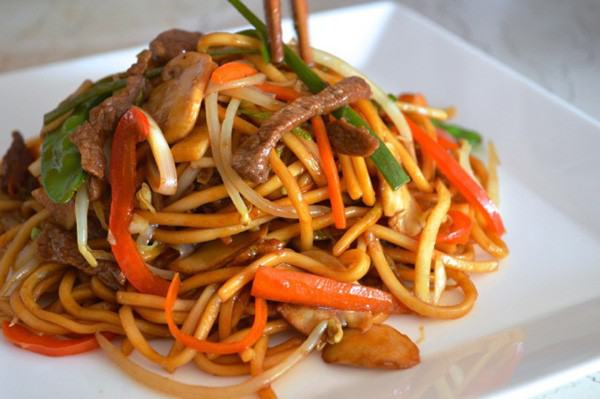

Cùng bắt tay làm thử thôi nào!
- 115g thịt bò
- 230g mì loại tùy thích
- 5g bột ngô
- 230g bắp cải, 230g giá đỗ, 1 củ cà rốt
- 115g nấm, 115g măng
- 170g đậu Hà Lan
- 1 gốc hành lá, 1 tép tỏi, 1trái ớt chuông đỏ
- 5ml dầu mè, 35ml nước tương, muối, đường
Thịt bò lạng miếng mỏng, nhỏ vừa ăn. Cho thịt bò vào bát, ướp với bột ngô, 5ml nước tương, rượu gạo và dầu. Ướp trong khoảng 10 phút.
Đun sôi nồi nước, cho mì vào trụng chín khoảng 2 phút. Vớt mì ra, dội nước mát vào mì rồi để ráo.
Sơ chế các loại rau củ, sau đó thái sợi tất cả, để riêng ra dĩa.
Cho ít dầu vào chảo, làm nóng dầu rồi cho phần thịt bò vào xào sơ. Xào đến khi thịt bò chuyển màu thì cho ra dĩa.
Cho thêm ít dầu lên chảo đã xào thịt bò, phi thơm tỏi rồi đổ phần rau củ vào xào đều.
Cho phần mì vào xào chung với rau củ, trộn đều tất cả. Kế đến cho phần thịt bò vào và nêm nếm gia vị gồm: ước tương, dầu mè, ít muối, đường cho vừa miệng, xào thêm vài phút thì tắt bếp.
Bày món ăn ra dĩa, thêm hành ngò hoặc ít tiêu nếu thích. Mì xào bò là món ăn cực dễ làm, tuy nhiên để làm ngon không phải ai cũng biết. Mì phải đạt độ mềm, thịt bò không bị quá lửa và ngấm vị, rau củ càng đa dạng món mì càng ngon đó là những điều cơ bản để tạo nên dĩa mì hấp dẫn. Chúc bạn hoàn thành món ăn!